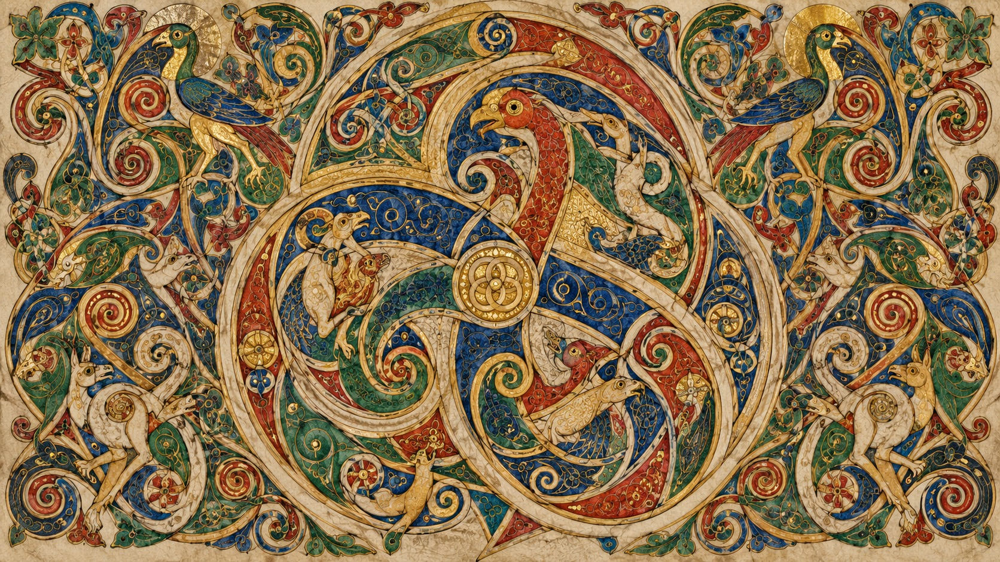
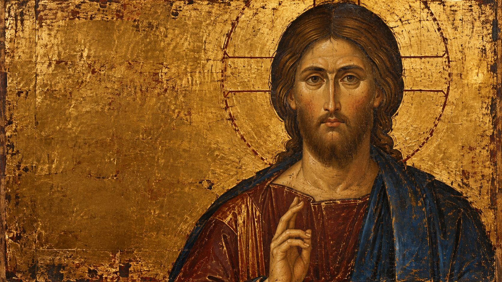
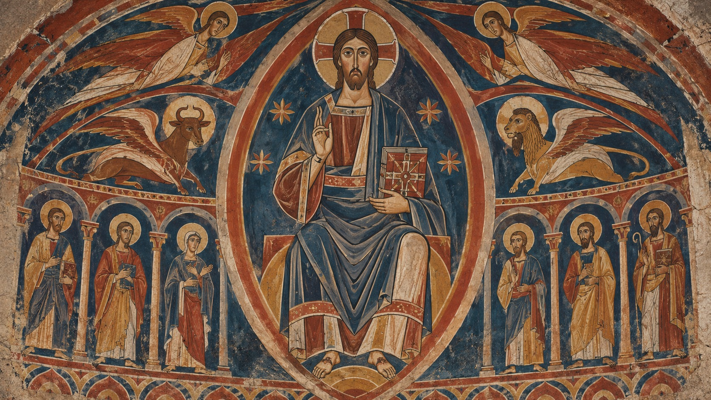
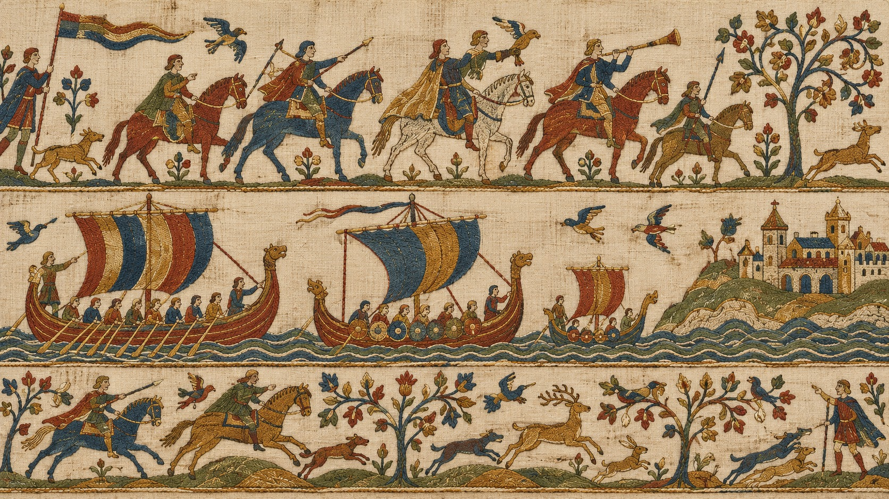
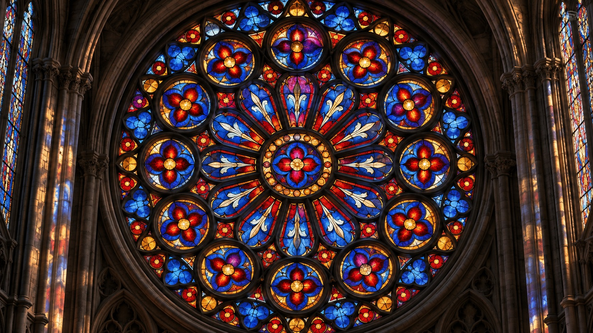
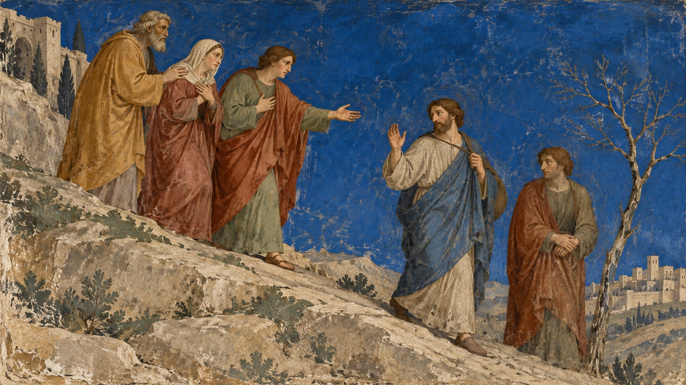
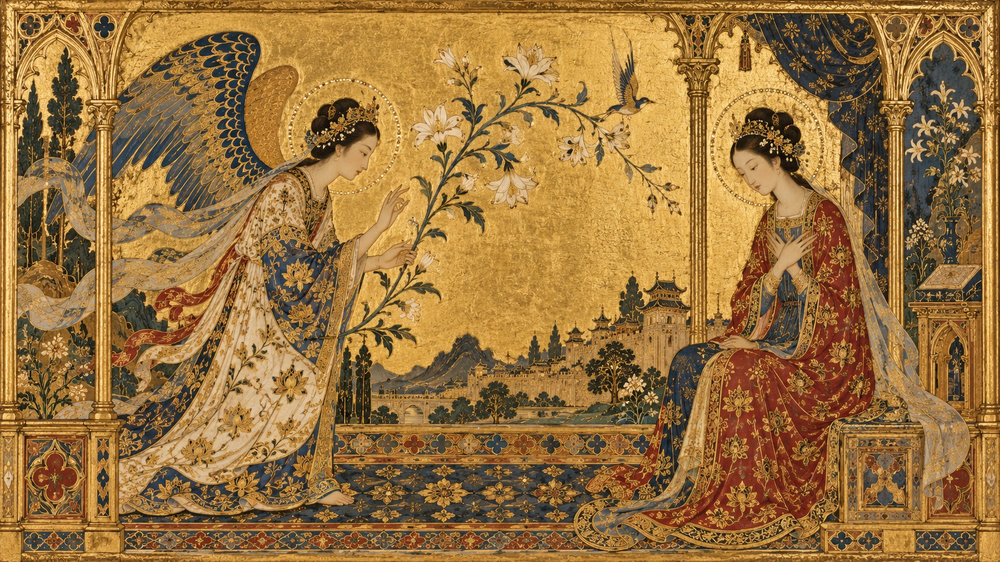
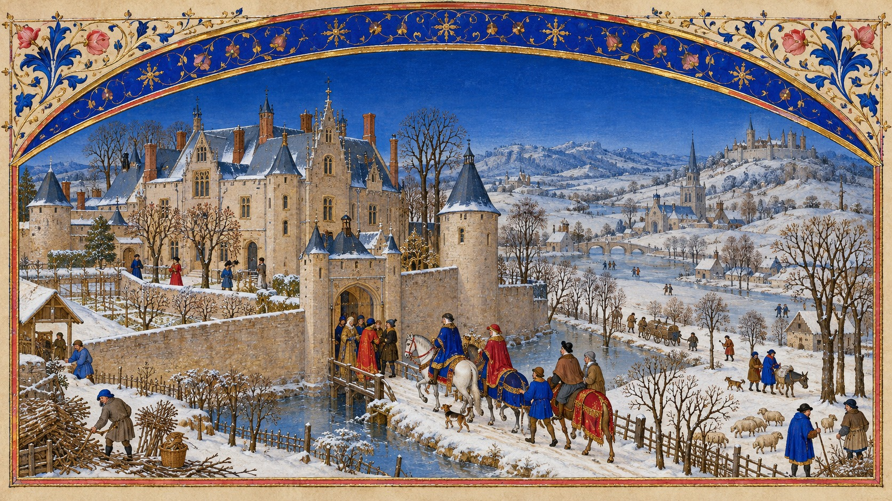
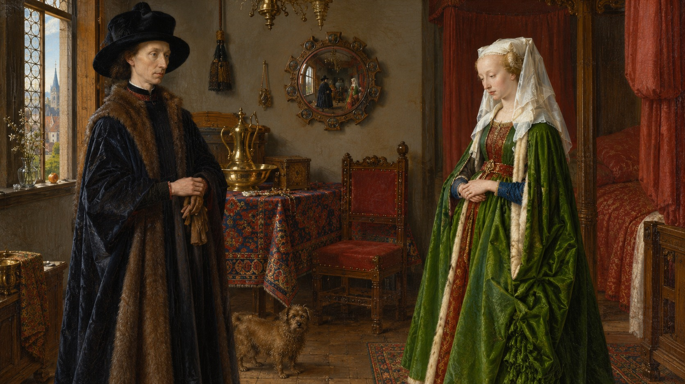
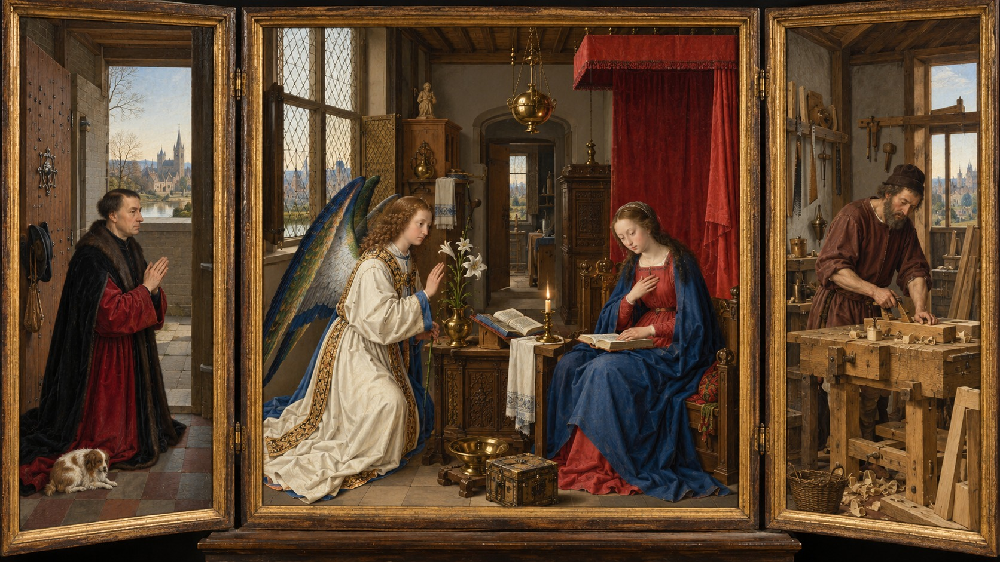

Mười lăng kính thị giác · thế kỷ VI–XV
Mười
thế giới.
Một thời đại.
Nghệ thuật Trung cổ không có một gương mặt duy nhất. Mỗi chất liệu mở ra một cách nhìn khác về quyền lực, đức tin, thiên nhiên và con người.
Gợi từ thủ bản Book of Kells · folio 34r Cuộn · vuốt · phím mũi tên để lật trang
02 · Icon Byzantine
Gương mặt
nhìn thẳng.
Trong icon Christ Pantocrator ở Sinai, ánh nhìn trực diện, bàn tay chúc phúc và nền vàng biến hình ảnh thành một điểm gặp gỡ.

03 · Romanesque · Sant Climent de Taüll
Một dáng hình.
Cả vũ trụ.
Tranh tường được đọc theo tầng: hình tượng chính ở trên, các nhân vật thánh ở giữa, dải trang trí khép lại bên dưới.
04 · Thêu Romanesque · Bayeux
Lịch sử chạy thành một dải.
Đây là tranh thêu len trên vải lanh — tên gọi “tấm thảm Bayeux” dễ khiến ta quên mất từng mũi chỉ.

05 · Kính màu Gothic · Chartres
Ánh sáng
có cấu trúc.
Cửa sổ hoa biến cả bức tường thành một hình ảnh lớn, đọc từ tâm ra những vòng truyện và màu kính.


06 · Giotto · Cappella degli Scrovegni
Cảm xúc
dựng nên
không gian.
Các dáng người nặng hơn, gần hơn; ánh nhìn và cử chỉ kéo mắt ta vào câu chuyện trên vách.
Bích họa nhà nguyện · 1303–130507 · Gothic Siena · Simone Martini & Lippo Memmi
Đường nét
biết múa.
Trong Annunciation, nền vàng, viền trang trí và chuyển động uyển chuyển tạo nên vẻ thanh lịch như nghi thức cung đình.
Tác phẩm tại Uffizi · 1333

08 · Tiểu họa sách giờ · Anh em Limbourg
Một cuốn lịch
thành cả thế giới.
Très Riches Heures đặt đời sống thường nhật cạnh lịch mùa, cung đình và vòng thời gian.

09 · Sơn dầu Hà Lan · Jan van Eyck
Căn phòng
giữ cả thế giới.
Arnolfini Portrait mở ra chiều sâu qua ánh sáng cửa sổ, vật dụng được quan sát kỹ và chiếc gương lồi.
Sơn dầu trên gỗ · 143410 · Triptych Hà Lan · xưởng Robert Campin
Ba cánh cửa.
Một căn phòng.
Mérode Triptych đưa câu chuyện thiêng liêng vào một không gian sống thân thuộc — ba tấm mở thành một thế giới.
